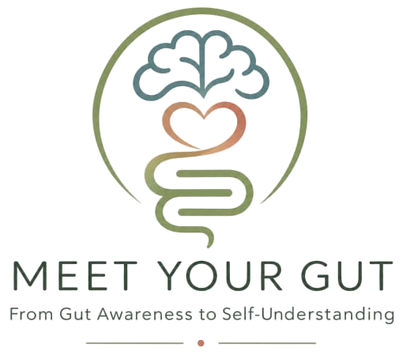

Compreender a saúde digestiva
Um espaço de informação científica rigorosa e acessível sobre sintomas, microbioma, eixo intestino–cérebro e a influência do stress no funcionamento intestinal.

GASTRENTEROLOGIA · MINDFULNESS · BEM-ESTAR
Ciência, presença e compaixão. Uma forma mais humana de cuidar da saúde digestiva e da relação entre corpo e mente.
Conhecer a abordagemO PROPÓSITO DO MEET YOUR GUT
O sistema digestivo está em diálogo constante com o cérebro, o sistema nervoso, o microbiota e a nossa experiência de vida. Cada consulta começa com escuta atenta e uma compreensão clínica completa.
Combino conhecimento médico baseado na evidência com uma perspetiva biopsicossocial, respeitando o ritmo e a história de cada pessoa.
O Meet Your Gut nasce da ideia de que escutar o corpo pode ser um ponto de partida para nos compreendermos melhor. Os sintomas merecem atenção clínica e podem também convidar-nos a olhar para a nossa experiência com curiosidade e cuidado.
Explorar práticas guiadas ↓Um espaço de informação científica rigorosa e acessível sobre sintomas, microbioma, eixo intestino–cérebro e a influência do stress no funcionamento intestinal.
Através do mindfulness, da compaixão e do modelo Internal Family Systems (IFS), podemos explorar a relação com o corpo, as emoções, os medos e os padrões internos — cultivando autoconhecimento e escolhas mais conscientes.
Médica especialista em Gastrenterologia, com 25 anos de experiência clínica.
Avaliação e acompanhamento de sintomas e doenças do aparelho digestivo.
Uma abordagem informada pela neurogastroenterologia para sintomas que refletem esta ligação.
Diagnóstico, orientação e seguimento de doenças do fígado e vias biliares.
Experiência em procedimentos diagnósticos e terapêuticos do aparelho digestivo.
MINDFULNESS & COMPAIXÃO
Rita Ornelas alia a sua experiência médica a formação em ensino de meditação mindfulness (Dharma Moon), cultivo da compaixão (Compassion Institute) e Internal Family Systems (IFS), numa abordagem atenta ao percurso de cada pessoa.
UM MOMENTO PARA SI
Um espaço para descobrir meditações guiadas e conteúdos sobre mindfulness e bem-estar, para levar a prática consigo no dia a dia.
CONSULTAS
Para marcações, selecione a unidade mais conveniente.
Consultas em português, inglês e francês.